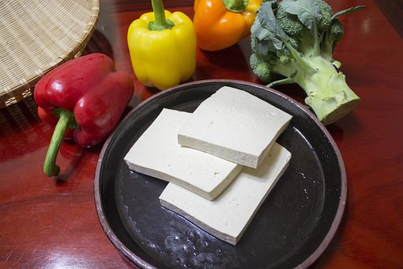
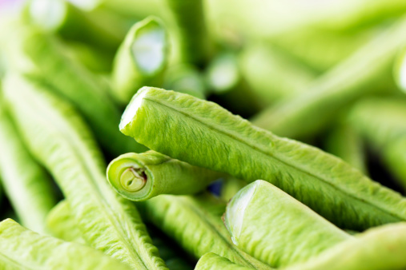

Here you can find the most common ingredients used in vegetarian recipes and some quick and easy recipes:
 The most common ingredients used in vegetarian recipes:
- Lentils are red, green, yellow, brown, black, and orange lentils, and you should definitely keep a variety of them on hand
- Beans are an easy source of protein and are good on their own or in a recipe I can’t even begin to extol the versatile virtues and satiating powers of beans.
- Red onions to be a culinary workhorse not only will it last forever, it is equally delicious raw as it is cooked. And, it’s simply a beautiful looking ingredient..
- Green Beans are the unripe, young fruit and protective pods of various common bean plants.
- Oats come in several forms, and some are more nutritious than others because they include more parts of the grain.
- Quinoa has gained in popularity over the past decade—it cooks just like rice, making it familiar to most home chefs, and it’s packed with protein and a high volume of fiber.
- Grains are an excellent nutritional building block for vegans to use in meals at any time of day, and they can also be useful for snacking and baking too
- Barley is a fantastic grain that comes in several different forms, all of which are versatile enough to serve as a side dish, like rice, or mix into soups and stews.
Now you can buy the ingredients here
Here are some quick and easy recipes methods:

Baked Beetroot
Follow the instructions below:
- Heat the oven to 200°C/gas mark 6. Peel the beetroot and cut into 3cm chunks and place on a large baking tray.
- For the tagine: Prepare the tagine heat the oil in a saucepan and fry the onion for 5 minutes until it starts to soften.
- Slice the pears into thin slices and brush lightly on both with oil. Heat a griddle pan, then chargrill the pears, in batches, for 1-2 minutes
- Add 100g of Kale leaves and cook for 3 mins.
- Add the lemon halves to the pan and cook for 2 minutes until charred.
- Meanwhile, once water is boiling add in the tenderstem broccoli and cook for 2-3 minutes until tender. Drain and run under cold water, set aside.

Tofu Kebabs
Follow the instructions below:
- Mix the Simply Delicious Organic Mayonnaise with the mustard, curry paste, garlic and ginger and season well.
- Brush the kebabs with a little vegetable oil and grill until cooked and the marinade starts to bubble and go golden brown.
- Place the reserved marinade in a small sauce pan with 1 tbsp smooth mango chutney. Heat through gently.
- Serve the kebabs on a bed of rice with the warm marinade drizzled over.Cut the tofu into bite sized cubes and place in a shallow dish.
- Cook on a high heat for two minutes, then lower to a medium heat and cook for a further 3 minutes stirring occasionally.